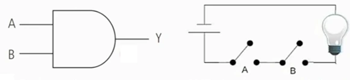

Introdução
Na memória Principal (RAM) residem os programas em execução. Tudo que está sendo usado nesse momento, PowerPoint, mouse, está residindo na memória Principal.
Memória Secundária (Disco Rígido ou HD) são mecanismos de armazenamento permanente, são mais abundantes (maior capacidade de armazenamento) e baratas. Observação: SSD também é uma memória secundária. Para um programa ser executado no computador, ele deve ser carregado da memória Secundária para a memória Principal.

Gerenciador de Memória
O GM monitora quais partes da memória estão em uso e quais estão disponíveis.
O GM aloca (ocupa) e libera memória para os processos. Quando um programa não está mais sendo utilizado pelo usuário, o GM libera o espaço de memória.
O GM gerencia a permuta de processos entre memória principal e secundária (área de swapping).
Os computadores utilizam uma hierarquia de memória em sua organização, combinando memórias voláteis e não voláteis.